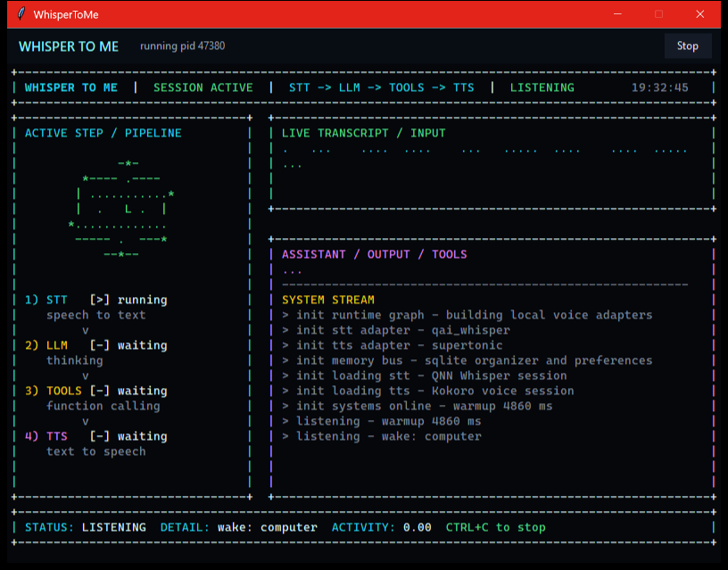

Snapdragon X2 Elite voice rig
A 24/7 assistant for Snapdragon desktops.
WhisperToMe is an always-on Windows background loop: local Whisper STT and Supertonic TTS both on the Snapdragon NPU, low-latency model calls, scheduled events, desktop controls, and a cockpit UI that shows every stage of the conversation.
Snapdragon X2 Elite
QNN HTP
24/7 background
INPUT
computer, what is up next?
OUTPUT
You have prototype review at 10. Want the checklist?
listening in tray
wake detected
qnn whisper small: warm
streaming speech
The real window
What you actually see.

What it does
A voice loop with a real desktop body.
Always warm
Continuous microphone capture, VAD segmentation, sliding wake phrase detection, and speech-pause command capture.
Speech on the NPU
Whisper STT and Supertonic TTS both run on the Snapdragon Hexagon NPU via ONNX Runtime QNN, with a strict no CPU/GPU fallback policy.
Fast model swaps
OpenAI Responses and Cerebras can be selected at runtime without deleting either integration.
Useful memory
SQLite-backed notes, preferences, reminders, tasks, checklists, itinerary, projects, decisions, and people notes.
Interruptible speech
Streaming responses feed sentence-level TTS chunks while the wake monitor keeps listening for interruptions.
Windows-aware
Tray behavior, volume ducking, brightness and volume tools, desktop capture, guarded PowerShell, switch-to-window, and one-shot web search/maps in the browser.
Schedules the future
Reminders and event triggers that fire on their own at a time or recurrence — speak a reminder or replay a recorded tool workflow autonomously, with a live "next up" chip in the UI.
Stays efficient
Auto-compacts the conversation after an idle hour or when context fills (a Codex-style, cache-aware threshold), and idles the UI render loop to save power.
Build journey
Wins, losses, and the path to a real assistant.
The project has been developed through manual voice testing, log review, latency profiling, and milestone commits. These are the parts that shaped the current architecture.
Scaffolded the voice stack
Split audio, STT, TTS, runtime, wake, LLM, and pipeline code into clean modules. Added `.env`, arbitrary wake phrases, doctor checks, and test commands.
Found the working STT lane
Moved from rough debug Whisper trials to Qualcomm AI Hub Whisper-Small precompiled QNN ONNX for Snapdragon X2 Elite.
Cut local latency
Kept STT and TTS objects warm. After a one-time QNN warmup, saved short-turn STT runs matched model time at roughly 294-318 ms.
Hardened wake detection
Reworked wake matching into token windows with stale-match protection, fuzzy spans, split-utterance support, and better command extraction.
Built the desktop shell
Added the animated TUI, startup loading animation, tray behavior, centered 800x600 host window, graceful stop/close, and wake-triggered restore.
Gave it local memory
Added SQLite tools for notes, preferences, reminders, checklists, itinerary, tasks, projects, decisions, people, and time-sensitive up-next checks.
Put TTS on the NPU
Brought Supertonic text-to-speech onto the Hexagon NPU end-to-end (~10x realtime) with frame-bucketing and on-device context caching, so both STT and TTS run off the CPU.
Made it autonomous over time
Added scheduled events and reminders that fire on their own, switch-to-window and browser actions, and idle + usage-based auto-compaction to keep long sessions fast.
Research lab
What has been proven, and what is still hard.
WhisperToMe is not pretending every model already lands cleanly on the NPU. The project keeps the product loop moving while isolating the research problems that need real artifacts or provider support.
QNN provider discovery works on Windows ARM64, exposes a Qualcomm NPU device, and runs the current `qai_whisper` STT path.
Qualcomm AI Hub Whisper-Small is the production STT path on Snapdragon X2 Elite.
Supertonic TTS now runs end-to-end on the Hexagon NPU (~10x realtime) by static-fixing the source ONNX and compiling fresh on-device — both halves of the speech stack are on the NPU.
Stock Kokoro ONNX still fails strict QNN HTP (dynamic shapes); a correct static export needs an attention-mask re-export, so Kokoro stays as a CPU debug voice.
Architecture
Built for swapping parts without rewriting the assistant.
The local speech loop, provider policy, LLM layer, organizer tools, Windows controls, and UI state stream all have their own boundaries. That is what made it possible to try OpenAI, Cerebras, QNN Whisper, debug Kokoro, wake interruption, and desktop capture in the same app.
mic -> vad -> whisper -> wake -> llm -> tts -> speakers
| | | |
| | | + markdown-safe speech
| | + tools + desktop capture
| + tui state stream
+ 24/7 tray-resident background loopCurrent milestone
The desktop assistant loop is alive.
Wake phrase, animated TUI, tray-hosted window, audio ducking, organizer tools, desktop capture, OpenAI/Cerebras switching, and interruption handling are in place, and both Whisper STT and Supertonic TTS now run on the Hexagon NPU. Next frontier: OS-level wake so scheduled events can fire even when the app is closed, and a richer native desktop shell.